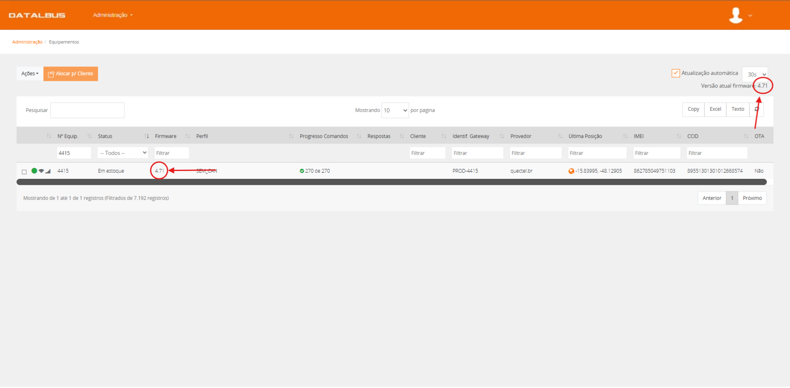

Software Necessários:
Checklist de material / Conta azul
6.1para dar inicio pegue a checklist de material que voce utilizou para dar saída no item 4: "Preparação de material para envio cliente"
6.2faça conferencia de todos os materiais que voltaram (KDB, spoke e chicotes) e anote na parte de retorno da checklist a quantidade de material novo e material/equipamentos que foram trocados pelo técnico.
6.3preencha os campos inferiores da checklist "entrada" marcando de acordo com cada item.
6.4Utilize o AUVO para dar baixa nos chicotes e o retorno de KDB, SPOKE e Chicotes. (tooltip auvo como dar baixa em KDB e fazer orçamento de chicotes)

6.5
6.6anote o numero de HWID da KDB, acesse o Datalbus e na tela clientes, procure pelo cliente para o qual os equipamentos retornaram
6.7no menu operações no canto esquerdo, clique equipamentos e na barra de pesquisa "N° Equip." procure pelo numero de HWID da KDB que voce selecionou, e verifique se a KDB tem todos os seus "progresso Comandos" finalizados. (colocar algo aqui se não tiver)
6.8
6.9volte para o menu de operação no canto esquerdo e clique em ativos e na barra de pesquisa "grupo" pesquisa por "desativados" e procure o carro que tenha o fabricante "kontrow"
6.10selecione o ativo com descrito no passo anterior e no canto superior esquerdo, clique em Ações e depois em instalar equipamento e em Devices disponiveis procure pelo numero de HWID da KDB que deseja remover da conta
6.11selecione novamente o ativo clique novamente em ações e logo em seguida clique em "Desinstalar Equipamento"
6.12selecione o ativo com descrito no passo anterior e no canto superior esquerdo, clique em Ações e depois em instalar equipamento e em Devices disponiveis procure pelo numero de HWID da KDB que deseja remover da conta e quando aparecer o aviso: "Deseja reutilizar o equipamento desinstalado no mesmo cliente?". clique em "Não"
6.13volte para a tela de equipamentos e aguarde que a KDB que foi removida da conta termine de carregar todos os comandos e desapareça da tela de equipamentos.
6.14no conta azul faça NF de retorno do material para o mesmo cliente do qual foi emitido a NF de saída. (saiba como fazer NF de entrada clicando aqui)